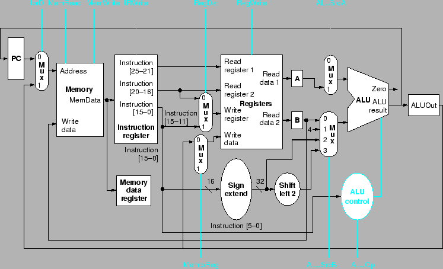
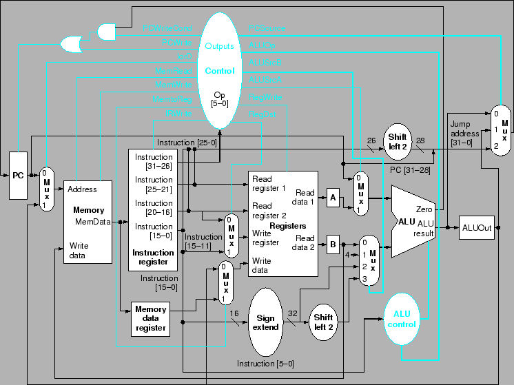

ในการทำงานของโปรเซสเซอร์ เราสามารถแบ่งการประมวลผลคำสั่งออกเป็นขั้นๆ ตามส่วนประกอบของโปรเซสเซอร์ที่ถูกใช้งานในชั่วขณะนั้น จากหลักการดังกล่าว เราสามารถใช้ในการออกแบบโปรเซสเซอร์ที่ทำการประมวลผลคำสั่งโดยใช้หลายวงรอบของสัญญาณนาฬิกา (Multicycle Implementation) โดยทุกขั้นตอนของการทำงานจะใช้เวลาพอดีกับหนึ่งวงรอบสัญญาณนาฬิกา ซึ่งส่วนประกอบต่างๆ สามารถใช้งานได้มากกว่าหนึ่งครั้งในการประมวลผลคำสั่งหนึ่งๆ ตราบเท่าที่ทำงานคนละวงรอบสัญญาณนาฬิกา ในการใช้งานดังกล่าวเราสามารถใช้งานทรัพยากรต่างๆ ได้คุ้มค่ามากยิ่งขึ้น หรือสามารถลดส่วนประกอบลงได้ ซึ่งเป็นข้อได้เปรียบของการออกแบบลักษณะนี้ รูปที่ 5.27 แสดงเส้นทางข้อมูลในภาพรวมของการออกแบบสร้างโปรเซสเซอร์แบบหลายวงรอบสัญญาณนาฬิกา โดยสามารถสรุปข้อแตกต่างได้ดังต่อไปนี้
เมื่อหมดหนึ่งวงรอบสัญญาณนาฬิกาข้อมูลที่ต้องใช้ในวงรอบต่อไปจะถูกเก็บไว้ในรีจีสเตอร์ที่มีเพิ่มเติมขึ้นมา นอกเหนือจากข้อมูลที่เก็บไว้ใน PC หรือในหน่วยความจำ ดังนั้นตำแหน่งของรีจีสเตอร์จะกระจายอยู่เพื่อเก็บข้อมูลในการประมวลผลของคำสั่งที่ยังไม่เสร็จสิ้นในวงรอบต่อไป ตำแหน่งของรีจีสเตอร์จะขึ้นอยู่กับว่าในวงรอบการทำงานนั้นๆ โปรเซสเซอร์ใช้งานส่วนประกอบใด และมีข้อมูลใดที่จำเป็นต้องเกก็บไว้ใช้งานในวงรอบหน้า ในการออกแบบโปรเซสเซอร์แบบหลายวงรอบสัญญาณนาฬิกานั้น เราสมมุติให้การทำงานของส่วนประกอบสำคัญเช่น Memory Access, Register Access,หรือ ALU Operation สามารถทำงานได้ภายในหนึ่งสัญญาณนาฬิกา ดังนั้นข้อมูลใดๆ ที่ได้มาจากส่วนประกอบเหล่านี้จะถูกเก็บไว้ในรีจีสเตอร์ชั่วคราวสำหรับการใช้งานในวงรอบการทำงานต่อไป รีจีสเตอร์เหล่านี้ประกอบด้วย
มีเพียง Instruction Register ที่จำเป็นต้องมีสายควบคุมการเขียนเนื่องจากรีจีสเตอร์ตัวอื่นขั้นต้นสาสมารถเขียนได้ทุกวงรอบการทำงาน ยกเว้น Instruction Register ที่มีการเขียนทับในวงรอบที่มีการเปลี่ยนคำสั่งเท่านั้น จึงต้องคงค่าคำสั่งไว้ตลอดการทำงานของคำสั่งนั้นๆ
ในการออกแบบสร้างโปรเซสเซอร์แบบหลายวงรอบสัญญาณนาฬิกา นั้นส่วนประกอบหลายชิ้นจะถูกใช้หลายครั้งในการประมวลผลคำสั่งหนึ่งๆ ดังนั้นเราต้องติดตั้ง Multiplexer เพิ่มเติม หรือขยายขนาดของ Multiplexer ตามความเหมาะสม ในการทำงานของโปรเซสเซอร์แบบวงรอบเดียวใช้งาน ALU ทั้งสิ้นสามชุด แต่ในโปรเซสเซอร์แบบหลายวงรอบสัญญาณนาฬิกา มี ALU เพียงตัวเดียวซึ่งต้องทำหน้าที่ทังสามอย่างและต้องเพิ่มเติมเส้นทางข้อมูลดังต่อนี้
รูป 5.28 แสดงรายละเอียดเส้นทางข้อมูลของโปรเซสเซอร์แบบหลายวงรอบสัญญาณนาฬิกา การที่เพิ่ม รีจีสเตอร์และ Multiplexer ทำให้สามารถลดหน่วยความจำจากสองเหลือหนึ่งชุด และจัด ALU ออกสองชุด เนื่องจาก รีจีสเตอร์และ Multiplexer มีราคาถูกกว่าหน่วยความจำและ ALU มาก การออกแบบลักษณะนี้จะสามารถลดราคาของฮาร์ดแวร์ได้มาก
รูป 5.29 แสดงสัญญาณควบคุมสำหรับประกอบการทำงานของเส้นทางข้อมูลของโปรเซสเซอร์แบบหลายวงรอบสัญญาณนาฬิกา ในการรองรับการทำงานของคำสั่ง Branch และ Jump การกำหนดค่า PC มีการทำงานได้สามวิธี
ในการเปลี่ยนค่าของ PC มีการทำงานสองลักษณะได้แก่ การเปลี่ยนค่าแบบไม่มีเงื่อนไข และการเปลี่ยนค่าแบบมีเงื่อนไข ในการทำคำสั่ง Branch ค่า PC จะถูกเปลี่ยนค่าเฉพาะเมื่อค่าในรีจีสเตอร์มีค่าเท่ากันเท่านั้น ดังนั้นการเปลี่ยนค่า PC จะใช้สัญญาณควบคุมสองเส้นได้แก่ PCWrite สำหรับการเขียน PC ค่าใหม่แบบไม่มีเงื่อนไข และ PCWriteCond สำหรับหารเขียน PC ใหม่แบบมีเงื่อนไข
เราสามารถเขียนสัญญาณควบคุมสำหรับ PC Write จากการดำเนินการทางตรรกะของสัญญาณ PCWrite, PCWriteCond, และ Zero แสดงในรูปที่ 5.30
|

|
|

|